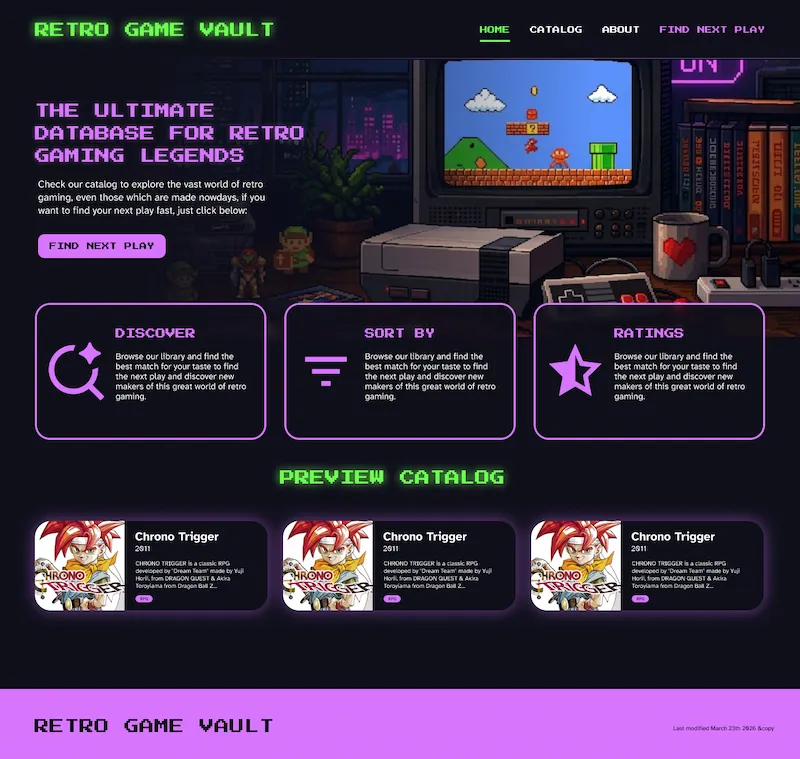
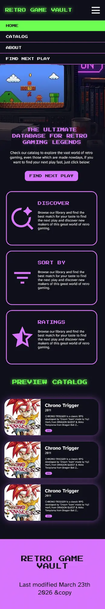

Retro Game Vault
Site Plan
For my final project, I will be creating a Retro Game Vault site that can be my personal database for retro games.
Site Purpose
The purpose of this website is to provide to users a view of available retro-games that were available for early gamers around the world. These lists can be categorized by a score (1-5 stars) or by release date.
Scenarios
- Which game should I play next based on the style I like?
- Which games are the most popular?
- Which games people think are the best?
- Which games are the most recent?
Typography
For the typography, I will be using:
- the Google Font "Press Start 2P" in all caps for the headings
- and "Atkinson Hyperlegible Next" for the body text.
This will give the site a retro gaming feel while still being easy to read.
Color Scheme
hsl(110.55 100% 65.92%)
#BC13FE
#0F0F1B
#FFFFFF
I called palette this retro synth.
Wireframes
Here are the wireframes for the site:

